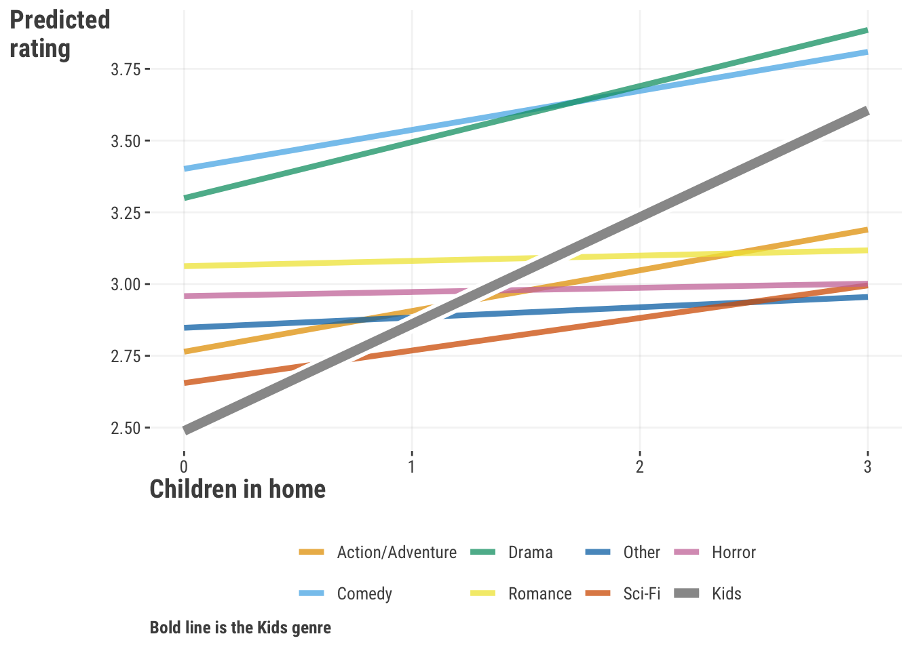
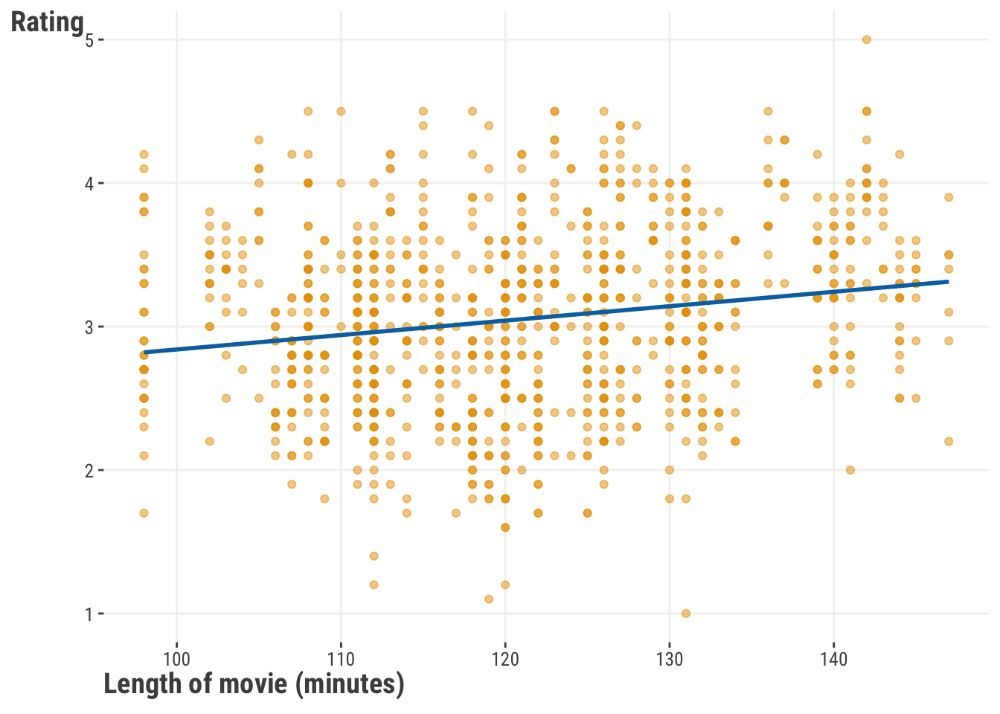
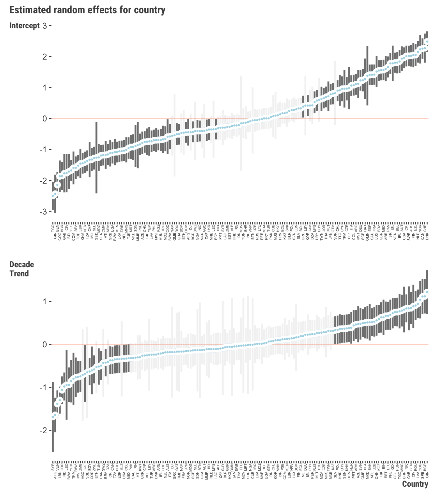
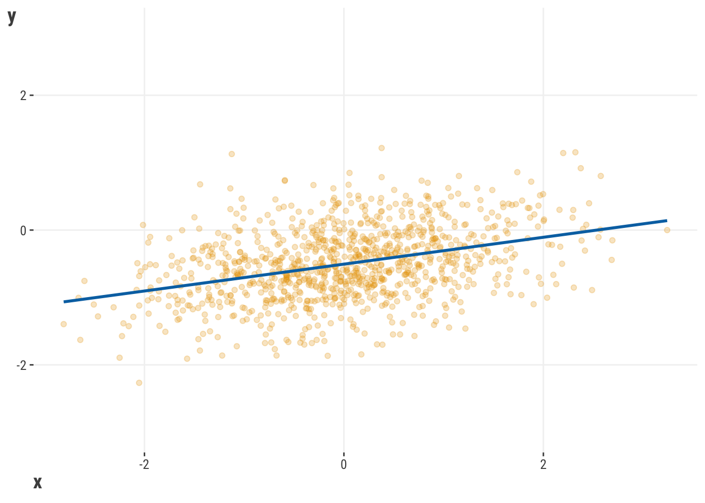

df_reviews = read_csv("data/movie_reviews_processed.csv")
model_base = lm(rating ~ children_in_home + genre, data = df_reviews)
model_interaction = lm(rating ~ children_in_home * genre, data = df_reviews)
# summary(model_interaction)5 Extending the Linear Model
With just linear model and generalized linear models, we have a solid foundation for modeling, and we’ve seen how there is a notable amount we can do with a conceptually simple approach. We’ve also seen how we can extend the linear model to handle different types of target distributions to help us understand and make some inferences about the relationships between our features and target.
In this chapter, we’ll push our lienar models even further with what still common modeling tools, and useful approaches to have at your disposal. These particular methods are also good examples of how we can think about our data and approach in different ways, and can serve as a good starting point for even more techiques you may want to explore in the future. A thread that binds these techniques together is the ability to use a linear model to explore nonlinear relationships!
5.1 Key Ideas
- The linear and generalized linear models are great and powerful starting points for modeling, but there’s even more we can do!
- Linear models can be used to model nonlinear feature-target relationships
- Various technqiues are availabel allow us to model relationships that are not linear or monotonic, and can help us to better understand our data, even while still being linear models.
- While these seem like very different approaches, we can still use our linear model concepts and approach at the core, take similar estimation steps, and even have similar, albeit more, interpretation.
5.1.1 Why this matters?
The linear model is a great starting point for modeling. It is a simple approach that can be used to model a wide variety of relationships between features and targets, and it’s also a great way to get a feel for how to think about modeling. But linear and generalized models are just the starting point, and the models depicted here are very common extensions used in a variety of disciplines and industries. More generally, the following techniques allow for nonlinear realationships will still employing a linear model approach. This is a very powerful combination, and it’s good to be aware of these tools.
5.1.2 Good to know
While these models are extensions of the linear model, they are not necessarily more complex, but it can take a bit more effort to interpret. You likely want to be fairly comfortable with standard linear models at least before you start to explore these extensions.
TODO: This can be a chapter with a general focus on nonlinearities: intearctions in general and mixed model, gam (effects vary with self or other), quantile (effects vary with target). Also remind GLM as introducing nonlinearity.
5.2 Interactions
Things can be quite complex in a typical model with multiple features, but just adding features may not be enough to capture the complexity of the relationships between features and target. Sometimes, we need to consider how features interact with each other to better understand the relationships between features and target. A common way to add complexity in linear models is through interactions. This is where we allow the effect of a feature to vary depending on the values of another feature, or even itself!
As a conceptual example, we might expect that the effect of the number of children in the home on a movie’s rating is different for movies from different genres (much higher for kids movies, maybe lower for horror movies), or that genre and season work together in some way to affect rating (e.g. action movies get higher ratings in summer). We might also consider that the length of a movie might plateau or even have a negative effect on rating after a certain point, i.e., it would have a curvilinear effect. All of these are types of interactions we can explore. Interactions allow us to incorporate nonlinear relationships into the model, and so greatly extend the linear model’s capabilities - we basically get to use a linear model in a nonlinear way!
With that in mind, let’s explore how we can add interactions to our models. Going with our first example, let’s see how having kids impacts the relationship between genre and rating. We’ll start with a standard linear model, and then add an interaction term. Using a formula approach makes it very straightforward to add an interaction term. We just need to add a : between the two features we want to interact.
import pandas as pd
import statsmodels.formula.api as smf
df_reviews = pd.read_csv("data/movie_reviews_processed.csv")
model_base = smf.ols(
formula = 'rating ~ children_in_home + genre',
data = df_reviews
).fit()
model_interaction = smf.ols(
formula = 'rating ~ children_in_home * genre',
data = df_reviews
).fit()
model_interaction.summary()Here is a quick look at the model output for the interaction vs. no interaction interaction model. Starting with the base model, the coefficients look like what we’ve seen before, but we have several coefficients for genre. The reason is that genre is composed of several categories, and converted to a set of dummy variables (refer to Section 1.8.2 and Section 9.2.2). In the base model, the intercept tells us what the mean is for the reference group, in this case Action/Adventure, and the genre coefficients tell us the difference between the mean for that genre and the reference. For example, the mean rating for Action/Adventure is 2.76, and the difference between that genre rating for the drama genre is 0.55. Adding the two gives us the mean for drama movies 2.76 + 0.55 = 3.32. We also have the coefficient for the numbre of children in the home, and this does not vary by genre.
| feature | coef_base | coef_inter |
|---|---|---|
| (Intercept) | 2.7640 | 2.7641 |
| children_in_home | 0.1422 | 0.1419 |
| genreComedy | 0.6350 | 0.6371 |
| genreDrama | 0.5539 | 0.5352 |
| genreHorror | 0.1288 | 0.1938 |
| genreKids | −0.1990 | −0.2759 |
| genreOther | 0.0288 | 0.0836 |
| genreRomance | 0.2275 | 0.2981 |
| genreSci-Fi | −0.1227 | −0.1090 |
| children_in_home:genreComedy | −0.0060 | |
| children_in_home:genreDrama | 0.0534 | |
| children_in_home:genreHorror | −0.1274 | |
| children_in_home:genreKids | 0.2306 | |
| children_in_home:genreOther | −0.1061 | |
| children_in_home:genreRomance | −0.1235 | |
| children_in_home:genreSci-Fi | −0.0285 |
But we have an interaction in our other model, and an interaction basically tells us that the effects of feature A change depending on the values of feature B and vice versa. In this setting, feature A can be children in the home or genre, and B can be genre or children in the home. So let’s start with the coefficient for children in the home. It is 0.14, which means that for every additional child in the home, the rating increases by that amount. But! Due to our interaction, we now interpret that as just the effect of children in the home when genre is the reference group Action/Adventure. Now let’s look at the interaction effect for children in home and the kids genre. It is 0.23, which means that for the kids genre, the effect of having children in the home increases by that amount. So our actual effect for an additional child in the home for the kids genre is 0.14 + 0.23 = 0.37 increase in the review rating. It is also correct to say that the difference in rating between the kids genre and the reference group Action/Adventure is 0.23, but, when with an increase in children in the home, the difference in rating between the kids genre and the reference group Action/Adventure increases by 0.23. In other words, it is a difference in differences1.
When we talk about differences in coefficients, across values of features, it can get a little bit hard to follow. In every case that you employ an interaction, you should look at the interaction visually. Here is a plot of the predictions from the interaction model. We hightlight the predictions for the kids genre, and we can see that the effect of children in the home is strongest for kids movies than for other genres, which makes a whole lot of sense! In other genres, the effect of having children seems to have little effect, and in others it still has a positive effect, but not as strong as for kids movies.

So we can see that interactions can allow a linear effect to vary depending on the values of another feature. But the real take home message from this is that the general effect is actually not linear! The effect changes depending on the setting. Furthermore, the coefficient for children in the home is only the effect of children in the home when genre is the reference group, or more generally, when other features are at their reference group or zero if they are numeric. Whenever you have interactions, you really can’t talk about a singular effect of a feature, but rather the effect of a feature at a particular setting of the other features. Some think this is a drawback, but it’s actually the reality of most feature-target relationships. Interactions allow us to model more complex relationships between features and target, and they are very common in practice.
5.2.1 Average Effects
So what is the effect of children in the home? Or genre, for that matter? We can’t really say, because the effect of one feature depends on the setting of the other feature. We can say what the effect of a feature is on average across the settings of the other features. This is called the average marginal effect2. We can compute this by averaging the effect of a feature across the values of the other features.
| term | estimate | std.error | statistic | p.value | conf.low | conf.high |
|---|---|---|---|---|---|---|
| children_in_home | 0.152 | 0.03 | 5.68 | 0.00 | 0.10 | 0.20 |
So-called marginal effects and related approaches such as SHAP values (see ?sec-model-explore-shap-values) attempt to boil down the effect of a feature to a single number, but this is difficult even in the simpler GLM settings, and downright misleading in more complex settings like our interaction model. Here we see the average coefficient for children in the home is 0.15, but we saw in Table 5.1 that this is slightly larger than what we would estimate in the non-interaction model, and we saw in Figure 5.1 it’s actually near zero (flat) for most genres. So what is the average effect really telling us? Consider a more serious case of drug effects across demographic groups, where the effect of the drug is much stronger for some groups than others. Would you want your doctor to prescribe you a drug based on the average effect across all groups or the specific group to which you belong?
In the end, when it comes to interactions, it’s better to think about the effect of a feature in terms of the setting of the other features it interacts with. It’s even better to visualize the effect of a feature across a range of settings of the other features to get the best understanding of how the relationship changes. It’s also good to think about what the actual prediction for your outcome is at key values of the features, and how that changes depending on what the feature values are. This is what we’ve done here with interactions, and it’s a good approach to take in general.
5.2.2 ANOVA
A common method for summarizing categorical effects in linear models is through analysis of variance or ANOVA. ANOVA breaks down the variance in a target attributable to different features or their related effects such as interactions. It’s a bit beyond the scope here to get into all the details, but both base R and statsmodels have functions for this as demonstrated here.
anova(model_base)import statsmodels.api as sm
smf.stats.anova_lm(model_base)In this case, it doesn’t appear that the interaction effect is statistically significant if we use the typical .05 cut-off.
| feature | df | sum_sq | mean_sq | f | p |
|---|---|---|---|---|---|
| children_in_home | 1.00 | 6.45 | 6.45 | 21.25 | 0.00 |
| genre | 7.00 | 86.17 | 12.31 | 40.55 | 0.00 |
| children_in_home:genre | 7.00 | 3.75 | 0.54 | 1.76 | 0.09 |
| Residuals | 984.00 | 298.69 | 0.30 |
The ANOVA approach can be generalized to provide a statistical test to compare models. For example, we can compare the base model to the interaction model to see if the interaction model is a better fit. However, it’s entirely consistent with just looking at the interaction result in the ANOVA for the interaction model, so doesn’t provide additional information, and the only models that can be compared in a meaningful way must be nested in this way, i.e., one model is a subset of the other.
It’s perhaps worth noting that ANOVA is often confused with being a model itself. When people use it as such, it is just a linear regression with only categorical features, something that can typically only happen within strict experimental designs that ignore interactions with continuous features. It’s pretty difficult to think of a linear regression setting where no continuous features would be of interest, but back when people were doing this stuff by hand, they just categorized everything to enable this approach. It’s a bit of a historical artifact, but still might be useful for exploratory purposes. Beyond that, ANOVA can be used to compare models more generally, but other approaches are a little more general or not confined to nested models- ones that can be seen as subsets of another.
5.3 Mixed Models
5.3.1 Knowing Your Data
As much fun as modeling is, knowing your data is far more important. You can throw any model you want at your data, from simple to fancy, but you can count on disappointment if you don’t fundamentally know the structure that lies within your data. Let’s take a look at the following visualizations. In Figure 5.2, we see a positive relationship between the length of the movie and ratings.

We could probably just stop there, but we might be ignoring something substantial within our data: genre. We might want to ask a question, “Does this relationship work the same way across the different genres?”
A very quick examination of Figure 5.3 might suggest that the rating varies by genre, and that the relationship between length and rating varies significantly over the different genres. The group means in the right panel show variability across genre. In addtion, on the left panel, some genres show a strong positive relationship, some show less of a positive relationship, a couple even show a negative relationship, and one even looks flat. We can also see that they would have different intercepts. This is a very important thing to know about your data! If we had just run a model with length as a feature and nothing else, we would have missed this important information.
5.3.2 Overview of Mixed Models
Clearly genre is offering some type of additional information to the model, but how can we incorporate that into our model? An interaction might come to mind at first, and that’s the right way to think about it! A mixed model can be used to get at that type of relationship into our model, which we can think of as a group interaction, without much hassle and additional explanability.
Before going too much further, the term mixed model is as vanilla as we can possibly make it, but you might have heard of different flavors of them before. You might have heard of hierarchical linear models, or multilevel models, or maybe mixed-effects models tossed around before. Maybe you’ve even been exposed to ideas like random effects or random slopes. These are in fact all instances of what we’re calling a mixed model.
What makes a model a mixed model? The mixed model is characterized by the idea that a model can have fixed effects and random effects. Fortunately, you’ve already encountered fixed effects – those are the features that we have been using in all of our models so far! We are assuming a single true parameter (coefficient/weight) for each of those features to estimate, and that parameter is fixed.
In the mixed model context, the random effect typically comes from some type of specific distribution, almost always a normal distribution, that contributes uniquely to the variance in the outcome. This distribution of effects can be characterized from something like a grouping variable (such as genre), such that we let those parameters, i.e. coefficients (or weights), vary across the groups, creating the observed distribution of values.
Formally, we might specify something like this:
\[ \text{rating} = b_{\text{0[genre]}} + b_\text{length}*\text{length} \]
We are explicitly saying that genre has its own unique effect for this model in the form of specific intercepts for each genre. This means that whenever an observation belongs to a specific genre, it will have an intercept reflect that genre, and that means that two observations with the same length but from different genres would have different predictions.
We also posit that those come from a random distribution. We can specify that as:
\[b_{\text{0[genre]}} \sim \text{N}(b_\text{intercept}, \sigma_\text{int\_genre})\]
This means that the random intercepts will be normally distributed and the overall intercept is just the mean of those random intercepts, and with its own variance, an extra parameter we’ll eventually have to estimate as part of the model. Another very common depiction is:
\[\text{re}_{[\text{int\_genre}]} \sim \text{N}(0, \sigma_\text{int\_genre})\]
\[b_{\text{0[genre]}} = b_\text{intercept} +\text{re}_{[\text{int\_genre}]}\]
The same approach would apply with a random slope, where we would have a random slope for each group, and that random slope would be normally distributed with its own variance.
\[b_{\text{length[genre]}} \sim \text{N}(b_\text{length}, \sigma_\text{length\_genre})\]
5.3.3 Using a Mixed Model
To use mixed models, at a minimum we have to specify a group effect in some way, but that’s the primary difference from our approaches used for linear or generalized linear models previously. We can specify a random effect in a few different ways, but we’ll start with the simplest way, which is to just add a random effect to the model.
We’ll use the lme4 package in R which is the most widely used package for mixed models.
library(lme4)
# random intercepts are specified by a 1
fit_ran_int = lmer(
rating ~ length_minutes_sc + (1 | genre),
df_reviews
)
fit_ran_slope = lmer(
rating ~ length_minutes_sc + (1 + length_minutes_sc | genre),
df_reviews
)
summary(fit_ran_int)
summary(fit_ran_slope)As with our recommendation with GAMs later, you really should just use R for mixed models. The functionality is overwhelmingly better there. However, you can use statsmodels in Python to fit mixed models3. But as an example, this doesn’t even converge with default settings even after scaling the data, so we had to switch the optimization method. These results correspond with the R results.
import statsmodels.api as sm
fit_ran_int = sm.MixedLM.from_formula(
"rating ~ length_minutes_sc",
df_reviews,
re_formula= '1',
groups=df_reviews["genre"]
)
fit_ran_slope = sm.MixedLM.from_formula(
"rating ~ length_minutes_sc ",
df_reviews,
re_formula= 'length_minutes_sc',
groups=df_reviews["genre"]
)
fit_ran_int = fit_ran_int.fit()
fit_ran_slope = fit_ran_slope.fit(maxiter=1000)
fit_ran_int.summary()
fit_ran_slope.summary()With Table 5.4 we can see some typical output from a mixed model. The fixed effect part is your basic GLM result and interpreted as such. Nothing new there, and we can see a general positive relationship between length and rating, but maybe not a strong one. But the random effects are where the action is! We can see the standard devation (or variance) of the random effects, i.e., the intercepts and slopes. We can also see the standard deviation of the residual, which conceptually identical to your standard regression model’s residual standard deviation, but won’t be the same value. We can also see the correlation between the random intercepts and random slopes. Depending on your tool, the default may be in terms of variances and covariances rather than standard deviations and correlations, but you would not see anything fundamentally different.
| group | term | estimate | std.error | statistic |
|---|---|---|---|---|
| Fixed | ||||
| Intercept | 2.97 | 0.11 | 27.73 | |
| length_minutes_sc | 0.08 | 0.04 | 1.88 | |
| Random | ||||
| genre | sd__Intercept | 0.30 | ||
| genre | cor__Intercept.length_minutes_sc | −0.24 | ||
| genre | sd__length_minutes_sc | 0.10 | ||
| Residual | 0.55 | |||
In this case, we can see notable variability attributable to the random effects. How do we know? Well, if if our rating is on a 1-5 scale, and we naturally have a standard deviation of 0.63 for rating before accounting for anything else, we mights surmise that having an effect of that size for just genre (roughly 0.3) is a relatively notable amount. We can also see that the correlation between the random intercepts and random slopes is negative, which means that the groups with higher intercepts have more negative slopes. Now let’s look at the estimates for the random effects for the model with both intercepts and slopes4.
ranef = ranef(fit_ran_slope)
# mixedup::extract_random_effects(fit_ran_slope) # prettier versionranef = pd.DataFrame(fit_ran_slope.random_effects).T

How do we interpret these deviations? For the intercept plot, we see that Kids, Sci-Fi, and Action/Adventure have a lower default value for rating, while Drama and Comedy start off relatively higher. These values reflect what’s happening when the length is zero, which, since it’s standardized, means that we’re talking about what’s happening for an average length movie.
Comedy’s estimated trend over length suggests that it has a smaller slope, and relative to the global slope, this means a negative relationship for Comedy movies, i.e. longer is not better! Longer romance movies, on the other hand, have an even larger positive coefficient, and so seem to do better seem to do better than short ones- maybe all the short ones are mostly awful Rom-Coms!
5.3.4 Mixed Model Summary
Even with just one feature, we certainly had a lot to talk about! This is just a glimpse of what mixed models have to offer, and the approach can be even richer than what we’ve just seen. But you might be asking- Why don’t I just put genre into the model like other categorical features? In the case of genre, that’s okay, but doing even just that would add several coefficients to the model before counting any interactions. Now consider thousands of United States county voting percentages for elections over time- would you just put 3000+ county indicator variables into the model as is? You can try, but you’ll likely run into estimation problems for typical GLM settings. In addition, as we saw, mixed models can correlate the random effects, which can be very useful for understanding the relationships between the groups. Furthermore, mixed models estimate the correlation of the observations within groups. Default mixed models assume this correlation is constant, but this can be modified to allow for different correlation structures. For example, in a longitudinal study you might want to assume that the correlation between observations within a group decreases as the time between observations increases. This is a very common approach for longitudinal data, where the correlation between observations decreases as the time between observations increases.
In general mixed models provide several advantages for the data scientist:
- Any coefficient can be allowed to vary by groups, including other random effects. It actually is just an interaction in the end as far as the linear predictor is concerned.
- The group-specific effects are penalized, which shrinks them toward the overall mean, and makes this a different approach from just adding a ‘mere interaction’. This helps to avoid overfitting, and that penalty is related to the variance estimate of the random effect. In other words, you can think of it as running a penalized linear model where the penalty is applied to the group-specific effects.
- Also unlike standard interaction approaches, we can estimate the covariance of the random effects, which can be useful for understanding the relationships between the groups. We can specify different covariance structures for observations within groups.
- Standard modeling approaches actually only estimate the variance part of the random effects, and get the estimated group-specific effects via a predictive method as part of model post-processing. This allows only the variances and covariances of the random effects to require estimation, rather than a weight or coefficient for every group.
- The group effects are like a very simplified embedding, where we have taken a cateogrical feature and turned it into a numeric one, like those shown in Figure 5.4. This may help you understand other embedding techniques that are used in other places like deep learning if you think of this as the simplest embedding approach.
- When you start to think aobut random effects and/or distributions for effects, you’re already thinking like a Bayesian, who is always thinking about the distributions for various effects. Mixed models are a perfect segue from standard linear model estimation to Bayesian estimation, where everything is random.
- The random effect is akin to a latent variable of ‘unspecified group causes’. This is a very powerful idea that can be used in many different ways, but importantly, you might want to start thinking about how you can figure out what those ‘unspecified’ causes may be!
- Group effects will almost always improve your model’s performance relative to not having them, especially if you weren’t including those groups in your model because of how many there were.
In short, mixed models are a fun way to incorporate additional interpretive color to your model, while also getting several additional benefits to help you understand your data!
5.4 Additive Models
Wiggle, wiggle, wiggle, yeah! – LMFAO
TODO: GAM gets a bit deep, but we do want to keep discussion of penalized appoach, and ultimately a word on the random effect connection.
But what if we want to allow the effect of a feature to vary depending on its own values? This is called a curvilinear effect, and we can use a linear model to capture this as well.
5.4.1 When Straight Lines Aren’t Enough
Fitting a line through your data is always going to be the best approach. While doing so often give us a wonderful ability to say important things about the relationships between variables and how one variable might influence another. What if we just want to dispense with the notion that we need to fit a straight line through some mass of the data? What if we relax the idea that we need a straight line and think in terms of fitting something curvy through the data?
TODO: Maybe make a single plot.
In other words, we can go from the straight line here:

To the curve seen here:
That curved line in Figure 5.6 is called a spline. It is created by a feature and expanding it to multiple columns, each of which is a function of the original feature. We then a fit a model to that data as usual. Oddly enough, the result is that we can use a linear model to fit a curve through the data. While this might not give us the same tidy explanation that a typical line would offer, we will certainly get better prediction, and a better understanding of the reality and complexity of the true relationship. But often it’s useful for exploratory purposes, and tools like ggplot, plotly5 and others make it easy to do so.
x = rnorm(1000)
y = sin(x)
tibble(x, y) |>
ggplot(aes(x = x, y = y)) +
geom_smooth(method = 'gam', se = FALSE) import plotly.graph_objects as go
import numpy as np
x = np.random.normal(size = 1000)
y = np.sin(x)
fig = go.Figure()
fig.add_trace(
go.Scatter(
x = x,
y = y,
line_shape = 'spline'
)
)Such models belong to a broad group of generalized additive models (GAMs). When we used an interations, we explored how the feature-target relationship varies with another feature. When we fit mixed models and interactions earlier, we focused on our feature and its relationship to the target at different values of other features. When we use a GAM, we are going to focus on our feature, and see how the relationship changes at different values for it. How are we going to do this, you might ask? Conceptually, we will have a model that looks like this:
\[ y = f(x) + \epsilon \]
This isn’t much different than before, and technically, it really isn’t. It’s the same linear combination of features we have with a basic linear model. The difference is that we are going to let \(f(x)\) be a function of a particular feature \(x\) that allows us to capture other types of relationships by expanding the feature \(x\) in different ways. Some approaches can be quite complex, tackling spatial, temporal, or other aspects of the data. But on the practical side are just extra columns in the model matrix that find their way into the model fitting function like any other feature.
These additive features will allow us to capture nonlinearities in our data very nicely. At this point, you might be asking yourself, “Why couldn’t I just use some type of polynomial regression or even a nonlinear regression?”. Of course you could, but both have limitations relative to a GAM. If you are familiar with polynomial regression, where we add columns that are squares, cubes, etc. of the original feature, you can think of GAMs as a more general approach, and very similar in spirit. But with a lack of penalization, the typical polynomial regression tends to overfit the data you currently have, and you are forcing curves to fit through the data. To use a nonlinear model, you need to know what the underlying nonlinear form actually looks like before you can even specify the model, and without taking extra steps, such models likewise can tend to overfit. Furthermore, outside of well-known physical, chemical, or biological processes, it’s rarely clear what the underlying functional form should be.
A GAM handles this situation a little better in that it will produce a curve that will provide a good fit to the data without the need to know the underlying functional form. Additionally, the default penalized approach will help prevent overfitting for smaller and/or more complex settings. Note also that we can do this for multiple features at once, and we can even include interactions between features. We can also use different types of splines to capture different types of nonlinearities. Here is another formal definition of a GAM that makes more clear we can deal with mulitple features.
\[ \hat{y} = \sum \mathbf{X_j\beta_j} \]
In this case, each \(X_j\) is a matrix of the feature and its basis expansion, and the \(\beta_j\) are the coefficients for each of those basis expansion columns. But a specific X could also just be a single feature and it’s coefficient to model a linear relationship. The nice thing is that you don’t have to worry about the details of the basis expansion – the package you choose will take care of that for you. You will have different options, and often the default is fine, but sometimes you’ll want to play with both the technique, and how ‘wiggly’ you want the curve to be.
5.4.2 A Standard GAM
Now that you have some background, let’s give this a shot! In most respects, we can use the same sort of approach as we did with our other linear model examples. For our exmaple here, we’ll use model what was depicted in figure Figure 5.6, which looks at the relationship between the healthy_life_expectancy_at_birth and happiness_score variables from the world happiness data.
We’ll use the very powerful mgcv package in R. The s function will allow us to use a spline approach to capture the nonlinearity.
library(mgcv)
df_happiness = read_csv('data/world_happiness_2018.csv')
gam_model = gam(
happiness_score ~ s(healthy_life_expectancy_at_birth, bs = "bs"),
data = df_happiness
)
summary(gam_model)We can use the statsmodels package in Python to fit a GAM, or alternatively, pygam, and for consistency with previous models we’ll choose the former. Honestly though, you should use R’s mgcv, as both require notably more work without much of the functionality. In addition, there is an ecosystem of R packages to further extend mgcv’s capabilities.
import statsmodels.api as sm
from statsmodels.gam.api import GLMGam, BSplines
import pandas as pd
df_happiness = pd.read_csv('data/world_happiness_2018.csv')
bs = BSplines(df_happiness['healthy_life_expectancy_at_birth'], df=[9])
gam_happiness = GLMGam.from_formula(
'happiness_score ~ healthy_life_expectancy_at_birth',
smoother = bs,
data = df_happiness
)
gam_happiness_result = gam_happiness.fit()
gam_happiness_result.summary()| Component | Term | Estimate | Std.Error | t.value | p.value |
|---|---|---|---|---|---|
| parametric coefficients | Intercept | 5.44 | 0.06 | 92.73 | 0 |
| EDF | REF.DF | F.VALUE | P.VALUE | ||
| smooth terms | s(healthy_life_expectancy_at_birth) | 5.55 | 6.49 | 40.11 | 0 |
When you look at the model output, what you get will depend a lot on the tool you use, and the details are mostly beyond the scope we want to present here (check out this for more). But in general, the following information will be provided as part of the summary or as an attribute of the model object:
coefficients: The coefficients for each of the features in the model. For a GAM, these are the coefficients for the basis expansion columns, as well as standard linear feature effects. Typically, the total effect for a smooth term is displayed in the summary rather than the coefficients for each basis expansion column. Above we have the intercept and the summarized smooth term.
global test of significance: Some tools will provide a test of the significance of the entire feature, as opposed to just the individual coefficients. This is a test of whether the feature is useful in the model at all.
edf/EDoF: Effective degrees of freedom. This is a measure of wiggle in the relationship between the feature and the target. The higher the value, the more wiggle you have. If you have a value close to 1, then you have a linear relationship. With our current result, we can be pretty confident that a nonlinear relationship gives a better idea about the relationship between
healthy_life_expectancy_at_birthandhappiness_scorethan a linear one.R-squared: Adjusted/Pseudo \(R^2\) or deviance explained. This is a measure of how much of the variance in the target is explained by the model. The higher the value, the better the model. Deviance explained is an analog to the unadjusted \(R^2\) value for a Gaussian model that is used in the GLM setting. It’s fine as a general assessment of prediction-target correspondence, but don’t believe the actual value since we’re not in a basic OLS setting.
Far more important than any of these is the visual interpration, and we can get plots from GAMs easily enough (results not shown).
TODO: NEED VISUAL
plot(gam_model)res_bs.plot_partial(0, cpr=True)Unfortunately the default package plots are not pretty, and sadly aren’t provided in the same way we’d expect for interpretation. But they’re fine for a quick look at your wiggly result. We provide a better looking one her6. The main interpretation is that there is not much relationship between healthy_life_expectancy_at_birth and happiness_score until you get to about 60 years of life expectancy, and then it increases at a faster rate. Various tools are available to easily plot the derivatives for more understanding.

To summarize, we can use a GAM to model nonlinear relationships between our features and target. We can use splines to capture those nonlinearities, and we can use a penalized approach to control the amount of wiggle in our model. What’s more we can interact the wiggle with other categorical and numeric features to capture even more complexity in our data. Because of this, GAMs are a very powerful modeling tool that take us a step toward more complex models, but without the need to go all the way to a neural network or other more complex model, and they can still provide statistical inference information as a default. A great tool to have in your modeling toolbox!
5.5 Quantile Regression
Oh, you think the median is your ally. But you merely adopted the median; I was born in it, molded by it. I didn’t see anything interesting until I was already a man. And by then, it was nothing to me but illuminating. – Bane (probably)
People generally understand the concept of the arithmetic mean. You see it some time during elementary school, it gets tossed around in daily language (usually using the word “average”), and it is statistically important. After all, where would the normal distribution be without a mean? Why, though, do we feel so tied to it from a regression modeling perspective? Yes, it has handy features, but it is also a bit restrictive to the types of relationships that it can actually model well.
Here we’ll show you what to do when the mean betrays you – and trust us, the mean will betray you at some point!
5.5.1 When The Mean Breaks Down
In a perfect data world, we like to assume the mean is equal to the middle observation of the data: the median. But that is only when things are symmetric though, and usually our data comes loaded with challenges. Skewness and even just a few extreme scores in your data may cause a rift between the median and the mean.
Let’s say we take the integers between 1 and 10, and find the mean.
\[\frac{1+2+3+4+5+6+7+8+9+10}{10} = 5.5\]
The middle value in that vector of numbers would also be 5.5.
What happens we replace the 1 with a more extreme value, like -10?
\[\frac{-10+2+3+4+5+6+7+8+9+10}{10} = 4.5\]
With just one dramatic change, our mean went down by a whole point. The median observation, though, is still 5.5. In short, the median is invariant to wild swings out in the tails of your numbers.
You might be saying to yourself, “Why should I care about this central tendency chicanery?” Let us tell you why you should care – the least squares approach to the standard linear model dictates that the regression line needs to be fit through the means of the variables. If you have extreme scores that influence the mean, then your regression line will also be influenced by those extreme scores.
Consider the following regression line:

Now, what would happen if we replaced a few of our observations with extreme scores?

With just a casual glance, it doesn’t look like our two regression lines are that different. They both look like they have a similar positive slope, so all should be good. To offer a bit more clarity, though, let’s put those lines in the same space:

With 1000 observations, we see that having just 10 relatively extreme scores is enough to change the regression line, even if just a little. But that little bit can mean a huge difference for predictions or just the conclusions we come to.
There are a few approaches we could take here, with common approaches being dropping those observations or Windsorizing them. Throwing away data because you don’t like the way it behaves is nearing on statistical abuse, and Windsorization is just replacing those extreme values with numbers that you like a little bit better. Let’s not do that!
A better answer to this challenge might be to not fit the regression line through the mean, but the median instead. This is where a model like quantile regression becomes handy. Formally, the objective function for the model can be expressed as:
\[ \text{Objective} = \Sigma \left((\tau - 1)\sum_{y_{i}<q}(y_{i}-q)+\tau\sum_{y_{i}\geq q}(y_{i}-q) \right) \]
With quantile regression, we are given an extra parameter for the model: \(\tau\) or tau. The tau parameter let’s us choose which quantile we want to use for our line fitting. Since the median splits the data in half, we can translate that to a quantile of .5. The objective function treats positive residuals differently than negative residuals. If the residual is positive, then we multiply it by the tau value. If the residual is negative, then we multiply it by -1 plus the tau value.
We can again use our movie reviews data. Let’s say that we are curious about the relationship between the word_count variable and the rating variable to keep things simple. To make it even more straightforward, we will use the standardized (scaled) version of the variable. In our default approach, we will start with a median regression, in other words, a quantile of .5.
library(quantreg)
model_median = rq(
rating ~ word_count_sc,
tau = .5,
data = df_reviews
)
summary(model_median)import pandas as pd
import statsmodels.formula.api as smf
df_reviews = pd.read_csv("data/movie_reviews_processed.csv")
model_median = smf.quantreg('rating ~ word_count_sc', data = df_reviews)
model_median = model_median.fit(q = .5)
model_median.summary() | Dep. Variable: | rating | Pseudo R-squared: | 0.1247 |
| Model: | QuantReg | Bandwidth: | 0.2375 |
| Method: | Least Squares | Sparsity: | 1.221 |
| Date: | Sun, 10 Mar 2024 | No. Observations: | 1000 |
| Time: | 14:49:33 | Df Residuals: | 998 |
| Df Model: | 1 |
| coef | std err | t | P>|t| | [0.025 | 0.975] | |
| Intercept | 3.0886 | 0.019 | 160.023 | 0.000 | 3.051 | 3.126 |
| word_count_sc | -0.2852 | 0.019 | -14.770 | 0.000 | -0.323 | -0.247 |
| feature | coef | conf.low | conf.high |
|---|---|---|---|
| (Intercept) | 3.09 | 3.05 | 3.26 |
| word_count_sc | −0.29 | −0.40 | −0.20 |
Fortunately, our interpretation of this result isn’t all that different from a standard linear model – the rating should decrease by -0.29 for every bump in standard deviation for number of words, which in this case is about 5 words. However, this is concerns the rating median, not the mean, like the standard linear model.
Quantile regression is not a one-trick-pony. Remember, it is called quantile regression – not median regression. Being able to compute a median regression is just the default. What we can do also is to model different quantiles of the same data. It gives us the ability to answer brand new questions – does the relationship between user age and their ratings change at different quantiles of rating? Very cool!
Instead of a single model to capture the trend through the mean of the data, we can now examine the trends within 5 different quantiles of the data - .1, .3 .5, .7, and .9. We aren’t limited to just those quantiles though, and you can examine any of them that you might find interesting. Here is a plot of the results of these models.

If we had to put some words to our visualization, we could say that all of the quantiles show a negative relationship. The 10th and 90th quantiles show the weakest relationship, while those in the middle show a notably stronger relationship. We can also see that that the 90th percentile is better able to capture those values that would otherwise be deemed as outliers using other standard techniques.
| feature | coef | conf.low | conf.high | quantile |
|---|---|---|---|---|
| (Intercept) | 2.27 | 2.20 | 2.34 | 0.10 |
| word_count_sc | −0.13 | −0.23 | −0.04 | 0.10 |
| (Intercept) | 2.79 | 2.61 | 2.93 | 0.30 |
| word_count_sc | −0.23 | −0.45 | −0.14 | 0.30 |
| (Intercept) | 3.09 | 3.05 | 3.26 | 0.50 |
| word_count_sc | −0.29 | −0.40 | −0.20 | 0.50 |
| (Intercept) | 3.32 | 3.26 | 3.35 | 0.70 |
| word_count_sc | −0.30 | −0.36 | −0.23 | 0.70 |
| (Intercept) | 3.85 | 3.74 | 3.98 | 0.90 |
| word_count_sc | −0.14 | −0.31 | −0.09 | 0.90 |
TODO: MOVE TO ESTIMATION OR ONLINE ONLY
5.5.2 Quantile Loss Function
Now that we know how to use standard functions for quantile regression, let’s see one way that we can create a least squares loss function for fitting a linear regression model and compare it with a function for quantile loss.
quantile_loss = function(par, X, y, tau) {
linear_parameters = X %*% par
residual = y - linear_parameters
loss = ifelse(
residual < 0,
(tau-1)*residual,
tau*residual
)
sum(loss)
}def quantile_loss(par, X, y, tau):
linear_parameters = X.dot(par)
residual = y - linear_parameters
loss = []
loss = np.where(
residual < 0,
(tau-1)*residual,
tau*residual
)
# for i in residual:
# if i < 0: loss.append((-1 + tau)*i)
# else: loss.append(tau*i)
return sum(loss)You’ll notice right away that we have a few differences. Our quantile loss function includes the tau argument, which will let us set our quantile of interest; naturally, it can be any value between 0 and 1. The residual is multiplied by the tau value, only if the residual is greater than 0. If the residual is negative, we need to add tau to -1. Since we need a positive value for our loss values, we will multiply our negative residuals by the negative value produced from -1 plus our tau value. After that, we just sum all of those positive loss values and do our best to minimize that summed value.
5.5.3 Model Fitting
Now that we have our data and our loss function, we can fit the model almost exactly like our standard linear model. Again, note the difference here with our tau value, which we’ve set to .5 to represent the median.
X = cbind(1, df_reviews$word_count_sc)
y = df_reviews$rating
optim(
par = c(intercept = 0, word_count_sc = 0),
fn = quantile_loss,
X = X,
y = y,
tau = .5
)$par intercept word_count_sc
3.0886 -0.2852 from scipy.optimize import minimize
import numpy as np
X = pd.DataFrame(
{'intercept': 1,
'word_count_sc': df_reviews['word_count_sc']}
)
y = df_reviews['rating']
minimize(
quantile_loss,
x0 = np.array([0, 0]),
args = (X, y, .5)
).xarray([ 3.09011343, -0.28416408])5.6 Performance Comparisons
TODO: UPDATE WITH CURRENT MODELS
Just for giggles, we should see how all of our models perform:
| model | rmse |
|---|---|
| standard | 0.59 |
| median | 0.59 |
| gam | 0.59 |
| mixed | 0.50 |
Let’s check out the results in Table 5.8. Unsurprisingly, the standard linear model and the median regression were pretty close to each other. GAM offered a small bump in performance, but our best model came from the mixed model. This finding may or may not surprise you – as you spend more time with models, you often encounter situations where simple models outperform more complex models, or are on par with them. Here, we are seeing that the mixed model is offering us a better fit to the data than the other models. However, that doesn’t mean that you can just go right to the mixed model. You need to know your data and know what you are trying to accomplish.
5.7 Wrapping Up
The standard linear model is useful across many different data situations. It does, unfortunately, have some issues when data becomes a little bit more “real”. When you have extreme scores or relationships that a standard model might miss, you don’t need to abandon your linear model in favor of something more exotic. Instead, you might just need to think about how you are actually fitting the line through your data.
5.7.1 Where to go from here
No matter how much we cover in this book, there is always more to learn. Here are some additional resources that you might find helpful related to this task. But if you’ve got a good grip on linear models and related topics, feel free to try out some machine learning Chapter 6!
5.8 Exercises
TODO: ADD Exercise
If you want absolute depth on quantile regression, we will happily point you to the OG of quantile regression, Roger Koenker. His book, Quantile Regression is a must read for anyone wanting to dive deeper into quantile regression (2005), or just play around with his R package quantreg. Galton, Edgeworth, Frisch, and prospects for quantile regression in econometrics is another resource from him.
If you want to dive more into the GAM world, we would recommend that you start with the Moving Beyond Linearity chapter in An Introduction to Statistical Learning (James et al. 2021). Not only do they have versions for both R and Python, but both have been made available online. If you are wanting more after that, you can’t beat Simon Wood’s book, Generalized Additive Models: An Introduction with R (2017), or a more digestible covering of the same content by one of your own humble authors (Clark 2022).
There is no shortage of great references for mixed effects models. If you are looking for a great introduction to mixed models, we would recommend to start with yet another tutorial by one of your fearless authors! Michael Clark’s Mixed Models with R (2023), is a great introduction to mixed models and is freely available. If you want to dig just a little deeper, the lme4 vignette for Fitting Linear Mixed-Effects Models Using lme4 is a great resource.
Some models that employ an interaction that investigates categorical group differences like this actually call their model a difference-in-difference model.↩︎
These results are provided by the marginaleffects package, which is great for this and has pretty much no equal in the Python realm.↩︎
One of your authors worked for several years with the key developer of the mixed models functionality in statsmodels. As such, we can say there is zero doubt about the expertise going into its development, as there are few in the world with such knowledge. Even so, the functionality is not as mature or as expansive as what you get in R.↩︎
One of your authors provides a package for mixed models in R called mixedup. It provides a nice way to extract random effects and summarize such models (link).↩︎
Plotly is directly available in R and Python, and plotnine is the ggplot equivalent in Python.↩︎
We used the see in R for a quick plot. We also recommend its functionality via the gratia package to visualize the derivatives, which will show more of where the effect is changing most.↩︎